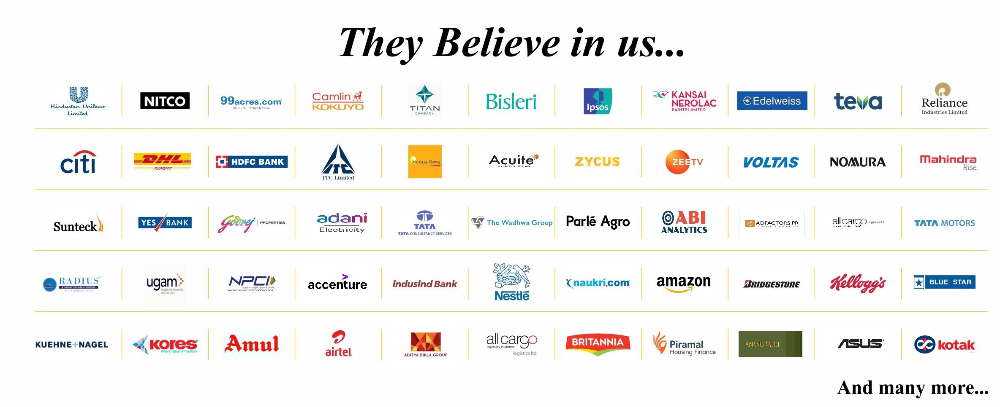

The placement cell at Chetana’s is known for its perfect blend of students’ involvement, faculty assistance and management’s vision. It consistently encourages students to actively participate in all industry-academia events, thereby increasing their interaction with the corporate world.
A team of hardworking student members of both first year and final year batches, along with the placement head and her team make relentless efforts to get companies of repute from diverse sectors of the industry for campus recruitment.
The cell also regularly coordinates with other committees of the Institute to make sure that it adheres to its promise of helping aspirants fulfil their career dreams. Placements at Chetana’s have been a testament of the ever increasing confidence the industry has in the Institute. In 2017, Economic Times has ranked Chetana’s amongst the top 50 B- Schools in India and top 7 Private B School in Mumbai. The average salary package of top 50 students was INR 7 lakhs per annum in the last placement.
Excellence at Chetana’s is a journey, not a destination.
Contact details
Ms. Neena Katkar
HOD – Corporate Relations, Placements and Alumni Network
Tel: 9892979201, 022 62157854 / 022 26551839
email: placement@cimr.in
SUMMER PLACEMENT
SIP- Summer placement (Summer internship programme, i.e., now popularly known as SIP), is an integral part of the academic curriculum of PGDM. For the successful completion of the programme, the students are required to complete the SIP.
After completion of the 1st year of the programme, i.e., after the 2nd semester and before the commencement of the second year of the programme, the students are required to work with an organisation for hands on experience. The duration of the SIP is eight to ten weeks. In some cases this period may be a little longer. SIP aims at widening the student's perspective by providing an exposure to real life organisational and environmental situations. This will enable the students to explore an industry/organisation, build a relationship with a prospective employer, or simply hone their skills in a familiar field. SIP also provides invaluable knowledge and networking experience to the students. During the internship, the student has the chance to put whatever he/she learned in the 1st year of PGDM into practice while working on a business plan or trying out a new industry, job function or organisation. The organisation, in turn, benefits from the objective and unbiased perspective the student provides based on concepts and skills imbibed in the first year at the institute.Some ideal projects for summer internships can be in the areas of strategy formulation, business process reengineering, MIS, ERP implementation, retail banking, industry analysis, new product launches, sales and distribution, market research and advertising, etc., among others. However, this is not an exhaustive list of areas but can be varied to suit the requirements of the organisations where the student has to undergo internship. In some cases, even field work can also become an integral part of SIP. An additional benefit that organisations may derive is the unique opportunity to evaluate the student from a long-term perspective. Thus the SIP can become a gateway for final placement of the student.
The student should ensure that the data and other information used in the study are obtained with the permission of the organization concerned. The students should also behave ethically and honestly with the organisation.

Executive Placement Reports PGDM
2020-22
2019-21
2018-20
2017-19
2016-18
Executive Placement Reports PGDM(Marketing)
2020-22
2019-21
2018-20
2017-19
2016-18
OUR ESTEEMED RECRUITERS

MDP

On Saturday, 27th August, 2022 Chetana’s Institute of Management and Research conducted a Management Development Program on the topic, “Investing with Derivatives – A New Perspective .”
Dr. Chirag Shah was the resource person for the program. The session started with inauguration by the CEO – CIMR, Dr. Madhumita Patil, and Director - CIMR, Dr. Nandita Mishra. 11 participants had attended the program.
During the 8 hours session, Dr. Chirag Shah gave a new perspective toward the derivatives as a financial instrument. He elaborated on the use of derivatives as a risk management instrument. At the same time he emphasised on the right use of leverage for wealth creation.
The participants were happy to learn that Derivatives can be used as a long term investing tool rather than just a speculative tool with a zero sum game. They appreciated the way Dr. Chirag Shah cleared all the concepts without diving too much in the technicalities and by keeping things simple.
At the end of the session, the participants were more confident to use the financial instruments for their personal wealth management. They also gave their qualitative feedback to the CEO about the session.
The session ended with the certificate distribution by CEO ma’am to all the participants.
Managerial Effectiveness

Management Development Programs have great learning and transformation both for the trainers and participants. Training program on Managerial Effectiveness was conducted by Chetana's Centre of Excellence (COE) on 24 July 2022 for RD Group, Mumbai.
The resource persons for this MDP were ,Dr. Nandita Mishra, Director, CIMR and Dr. Mahesh Luthia, Associate Professor and Area Chair - HR
The MDP focused on aligning organisational goals, developing team work & strategies for managerial effectiveness. CEO Dr Madhumita Patil and Director CRKIMR Dr Kalim Khan , along with the resource persons conceptualized the training module.
We would like to thank R D Group for entrusting Chetana's Centre of Excellence with this endeavour towards learning and growing.
Developing Effective Leadership Skills

We at Chetana's are fully committed to advancing the culture of continuous learning and transformation for industry leaders through our Management Development Programmes conducted by Chetana's Centre of Excellence (COE).
In line with this philosophy and vision, earlier this week a Management Development Programme was conducted on 'Developing Effective Leadership Skills' by Chetana's Centre of Excellence for Adam Exports, Mumbai. The resource persons for this MDP were:
- Dr. Madhumita Patil, CEO - CRKIMR, CIMR and Chetana''s Centre of Excellence
- Dr. Kalim Khan, Director - CRKIMR
- Dr. Nandita Mishra, Director - CIMR and
- Dr. Mahesh Luthia, Associate Professor and Area Chair - HR
- The MDP focused on aligning organisational goals, developing leadership traits & strategies, building a common vision, and goal setting.
We would like to thank Shalin Sarvaiya for entrusting Chetana's Centre of Excellence with this endeavour toward learning and growing.
Chetana - Universitas Negeri Makassar (UNM) Makassar
Chetana’s Institute of Management & Research (CIMR) Mumbai, and the Faculty of Languages and Literature (FBS), Universitas Negeri Makassar (UNM) Makassar, South Sulawesi, Indonesia recently signed an MOU to formalize the collaboration between the two institutions/departments to promote the enrichment of their teaching and learning and research mission.
As part of our E-internationalisation program, CIMR has collaborated with UNM for student and faculty exchange programs, collaborative Research and discovery and other academic projects.
As part of this collaboration, CIMR had conducted an International FDP on Developing Cross Competency for faculty member and the faculty is working on some joint research projects.
Design and roll-out India's (and perhaps the world's) most comprehensive survey on 'Employee Engagement (EE)'
Chetana - Arcon

We were proud to present a knowledge sharing session with our industry partner ARCON
“The New Trinity for Business Growth: Customers, Projects & Security”
As we conclude the final day of the program, “ New Trinity for Business Growth: Customers, Projects & Security, we would like share our gratitude towards everyone who made this global event a success.
Thank you to all the esteemed panellist, our alumni, speakers and the team!
Chetana’s association with ARCON is a joint venture between Chetana and ARCON aims at exposing the participants to the concepts of Project management in the Information security domain. Program was aiming to focus on the standard and best project management practices for your cybersecurity projects which can help your organization learn from mistakes, avoid similar mistakes in the future and facilitate the continuous improvement of processes, procedures and projects. Properly documenting cybersecurity project specifics will save time and resources for similar projects in the future, while allowing teams to collaborate while keeping their communications secure thereby reducing the risk of a crippling data breach.
Project management allows information security (InfoSec) teams the ability to build a functional, secure base of IT infrastructure while keeping an eye on project resources, time and manpower to ensure that projects stay under budget. By breaking down cybersecurity initiatives into more manageable chunks with shorter life cycles, business and IT leaders can produce results without having to recreate the wheel with every initiative.
This two-day program (4 hours per day) aims to help participants develop a basic framework to plan, execute, monitor and control during various phases of the projects and to apply some project management techniques for the optimal utilization of resources in the domain.
Topics
Project Management Discipline of PMI
Significance of Project Management in Information Security Projects
How project management can benefit cybersecurity initiatives via dedicated implementation that can help organizations utilize their workforce more efficiently and effectively. How implementing project management strategies and methodologies can allow their teams to decrease IT project risks, cut costs and improve their success rates in the short and long term.
Best practices to influence positive change in your cybersecurity initiatives
How can organizations position themselves to become less prone to shouldering the force of risks. Using project management best practices to influence positive change in the cybersecurity initiatives.
- The new wave of Project Management: “Lean - Agile”
- Tools and Practical Aspects of Project Management
- Customer Centricity by Design Thinking
- Moving from Project to Product Mindset
- The world of DevSecOps
- Tools for managing Globally Distributed Teams